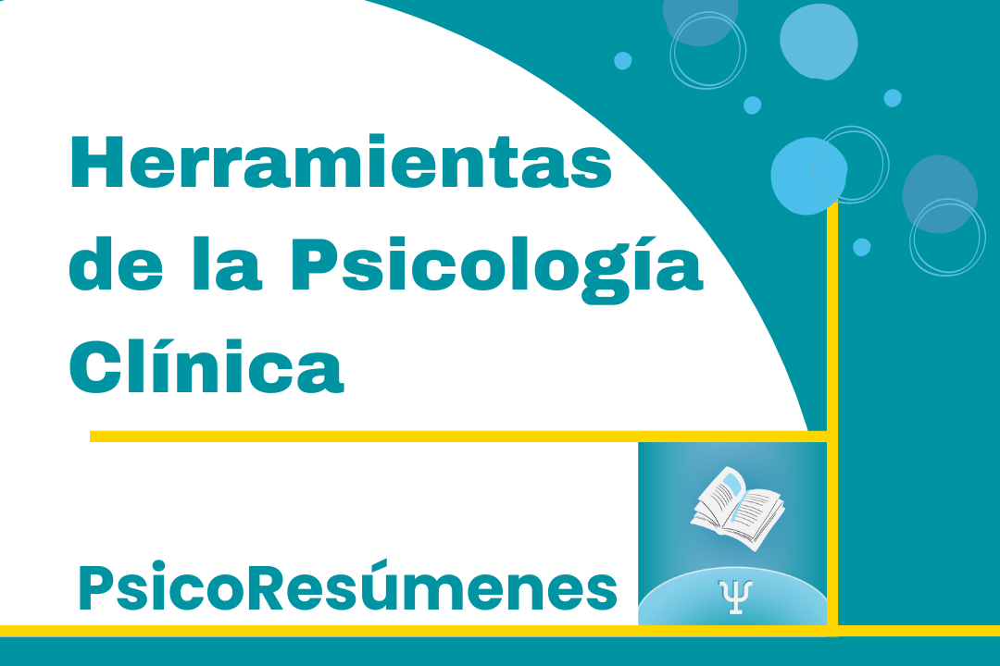
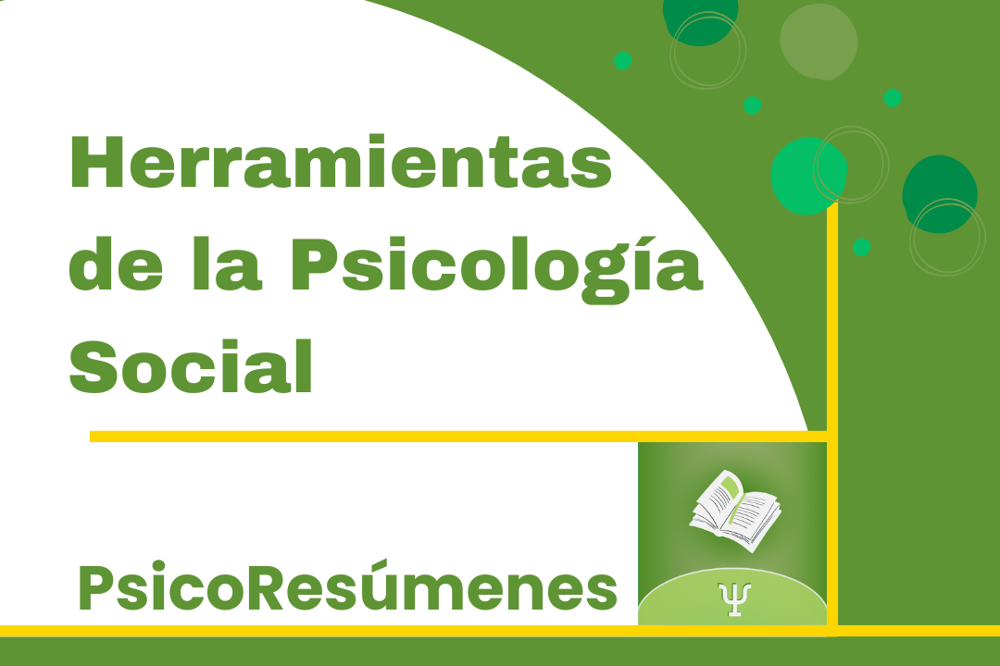
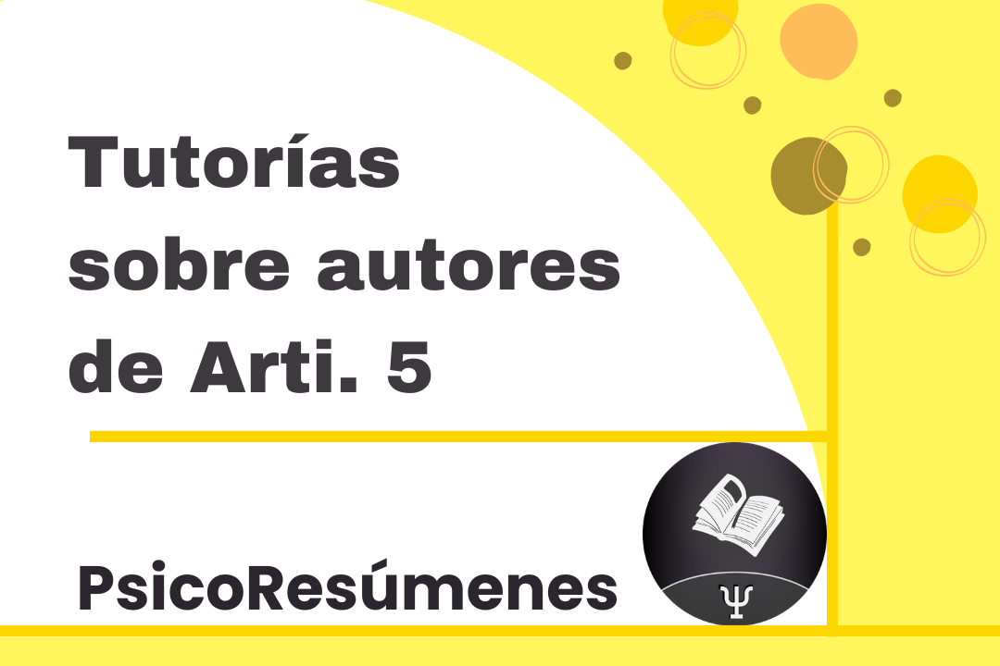

Psicología Social Crítica: ¿Qué nos propone?Psicología Social Crítica: ¿Qué nos propone?11/20/2023 Psicología Social CríticaEs posible que cuando estudiamos asignaturas como los son las orientadas hacia la psicología social crítica, como la es la de nuestra facultad, nos encontremos con textos que nos plantean muchas nociones o conceptos de una forma poco usual. Nos hablan de sus efectos epistemológicos, políticos, metodológicos, nos cuentan una historia muy larga sobre como se han concebido históricamente, retomándolo hasta la Grecia antigua, a veces (o todas). ¿Qué es problematizar?Se trata de pensar críticamente (problematizar) los términos, de ver de que maneras han visibilizado o invisibilizado formas de pensar, de ver y de decir sobre el mundo. Es decir, de que manera, al enunciarlos, creamos realidad. Una persona cuando dice comunidad, a la vez que la dice, la imagina, le otorga características, sujetos, "esencias", generalmente de forma automática y sin pensarlas en profundidad. Porque obvio, no vamos a estar pensando cada cosa que decimos, las veinticuatro horas del día. Sin embargo, en estas asignaturas, se trata de eso. No con todo (o si, a veces). Se trata de pensar mas en profundidad, de analizar la forma en la que decimos algo, analizar la forma en la que pensamos algo. Castoriadis nos habla de un "saber lo que se piensa". Y es eso, simplemente saber, conocer el como pensamos algunas cosas, para entender el como afectan nuestro entendimiento del mundo, y como algunas veces, estas cosas, podrían tener otros efectos, quizás mas deseados, si se las pensase de una forma distinta. SocioconstruccionismoSe plantea, además, que lo que pensamos es una forma de pensar socialmente construida, no es sino una construcción social, solo una manera de entender algo, de entre muchas otras formas. Así, algunos textos nos van a retomar hacia al Grecia antigua, si, pero también nos proponen una alternativa, una forma de entender distinto el concepto que analizan. En Articulación de saberes V, algunas de estas nociones son las de "comunidad", "diferencia", "lo común", etc. Pero además, también es necesario entender como articularlas entre sí. En general, las evaluaciones consisten en preguntas que tengan, al menos una consigna que necesite de la articulación de autores. De un pensar todas o casi todas estas nociones en conjunto. En esta video-tutoría, intento explicar como yo las entendí, por si mismas y en articulación, ya que quizás pueda resultar orientador en una lectura posterior del texto o resumen. Articulación de saberes V: Comunidad, diferencia, narración y desigualdadesReferencia bibliográfica
|

Tutorías particulares Tutorías por Zoom, tutorías grabadas y clases de consulta sobre varias materias de facultad. Consulta por más información al celular 098 053 967 ¡Leé más acá!  Herramientas de la Psicología Clínica Preparación particular o grupal del examen, parciales, acompañamiento del curso o de pruebas psicológicas específicas. Más información  Herramientas de la Psicología Social Preparación particular o grupal del examen, parciales, acompañamiento del curso o de temas especificos. Más información  Articulación de saberes V Preparación particular o grupal del primer parcial. Tutorías de autores específicos como Alvaro, Torres, Salazar, Fernandez y Guattari. Mentorías para realizar el segundo parcial grupal. Más información RedactorAlejandro Busto Bertorelli.
Psicólogo formado en la Facultad de Psicología de la Universidad de la República. Especializándose en terapias cognitivas, conductuales y contextuales. |